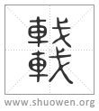

𨏖
籒文車。
清代 段玉裁《說文解字注》
- 輿輪之緫名也。
車之事多矣。獨言輿輪者。以轂輻牙皆統於輪。軾䡈軫軹轛皆統於輿。輈與軸則所以行此輿輪者也。故倉頡之制字、但象其一輿㒳輪一軸。許君之說字、謂之輿輪之緫名。言輪而軸見矣。渾言之則輿輪之緫名。析言之則惟輿偁車。以人所居也。故攷工記曰輿人爲車。
- 夏后時奚仲所造。
左傳曰。薛之皇祖奚仲居薛。以爲夏車正。杜云。奚仲爲夏禹掌車服大夫。然則非奚仲始造車也。明堂位曰。鉤車、夏后氏之路也。毛詩元戎傳曰。元、大也。夏后氏曰鉤車。先正也。殷曰寅車。先疾也。周曰元戎。先良也。箋云。鉤者、鉤股曲直有正也。俗本譌甚。今依釋名及音義改正。葢奚仲時車制始僃。合乎句股曲直之法。古史攷云。少昊時加牛。禹時奚仲加馬。強爲之說耳。
- 象形。
謂象㒳輪一軸一輿之形。此篆橫視之乃得。古音居。在五部。今尺遮切。釋名曰。古者曰車。聲如居。言行所以居人也。今曰車。車、舍也。行者所處若屋舍也。韋昭辯釋名曰。古惟尺遮切。自漢以來始有居音。按三國時尙有歌無麻。遮字衹在魚歌韵內。非如今音也。古音讀如袪。以言車之運行。不讀如居。但言人所居止。老子。當其無有車之用。音義去於反。此車古音也。然考工記輿人爲車。是自古有居音。韋說未愜也。
- 籒文車。
从戈者、車所建之兵。莫先於戈也。从重車者、象兵車䏈綴也。重車則重戈矣。